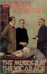
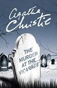
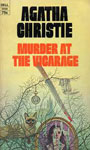
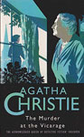
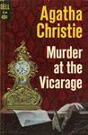
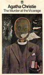
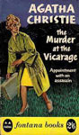

This is the first novel to feature the character of Miss Marple, although the character had previously appeared in short stories published in The Royal Magazine and The Story-Teller Magazine, starting in December 1927. These earlier stories would later appear in book form in The Thirteen Problems (1932).
In St. Mary Mead, no one is more despised than Colonel Lucius Protheroe. Even the local vicar has said that killing him would be doing a service to the townsfolk. So when Protheroe is found murdered in the same vicar's study, and two different people confess to the crime, it is time for the elderly spinster Jane Marple to exercise her detecting abilities. According to Miss Marple, there are seven suspects, including the Vicar himself. After some juggling of clues and events, Miss Marple, using her excellent deductive skills, determines the facts of the crime.







Screen Versions
The BBC adapted the book into a film in 1986, with Joan Hickson as Miss Marple. The adaptation was generally very close to the original novel with four major exceptions: the trap which exposes the killer is changed to involve another murder attempt, the characters of Dennis, Dr. Stone and Gladys Cram were deleted, Bill Archer is present in the kitchen while the murder takes place and Anne commits suicide out of remorse instead of being tried.
It was presented again by Granada Television in 2004 with Geraldine McEwan as Miss Marple. This version eliminates the characters of Dr. Stone and Gladys Cram, replacing them with the elderly French Professor Dufosse and his granddaughter Hélène. Other changes include the elimination of Miss Weatherby, the changing of Mrs. Price-Ridley's first name from "Martha" to "Marjorie", the renaming of Bill Archer to Frank Tarrent and the addition of a plotline in which the Colonel stole 10,000 francs from the French Resistance, which led to the death of an agent. Two major departures from the book are the portrayal of Miss Marple as Anne's close friend and the addition of a series of flashbacks to December 1915, where a younger Miss Marple was engaged in a forbidden love affair with a married soldier.
In both versions, the vicar's role is reduced and he does not participate in the investigation since his presence as the narrator was unnecessary in a filmed version.